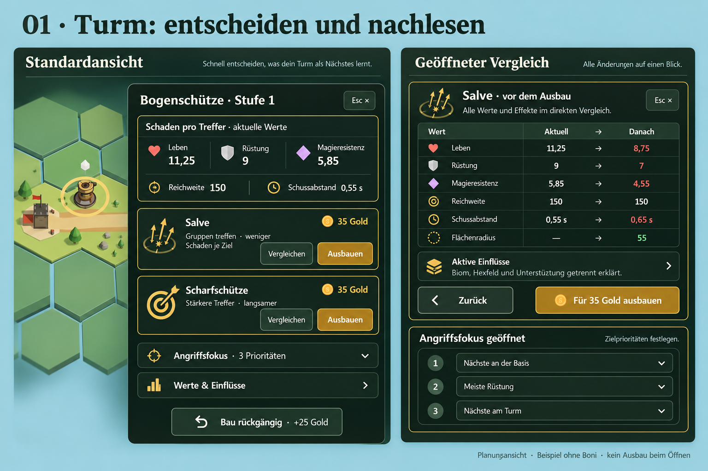
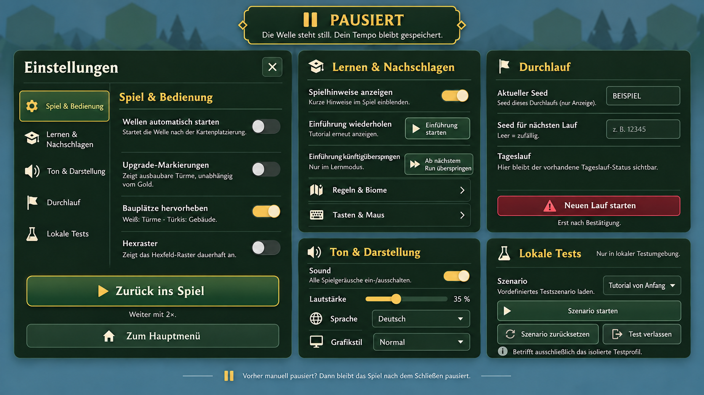
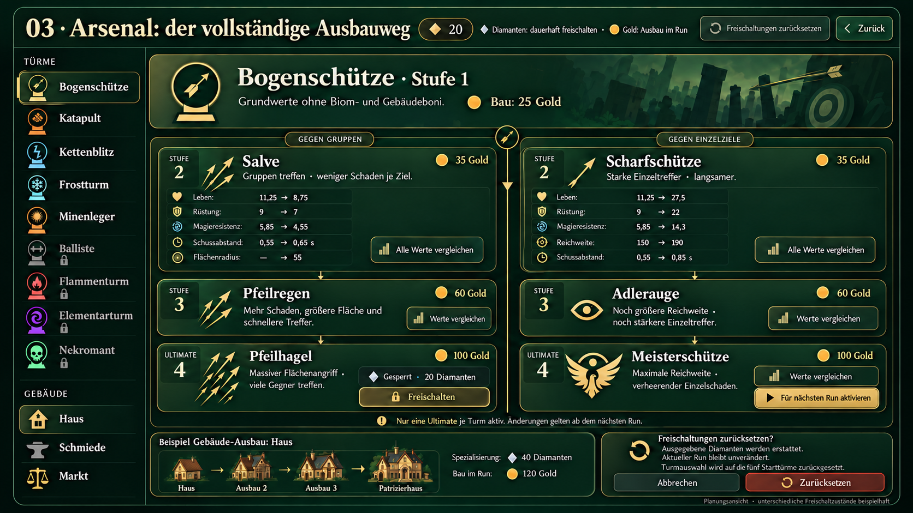

Planungsstand · 17. Oktober 2026 · Solo
Weniger Suchen.
Alle Informationen bleiben.
Drei überarbeitete Entwürfe mit geöffneten Detailansichten, vollständiger Funktionszuordnung und konkreten Bedienregeln. Noch keine Änderung am Spiel.
Was sich gegenüber den ersten Bildern konkret ändertSchaden gegen Leben, Rüstung und Magieresistenz bleibt unmittelbar sichtbar. Jeder Ausbau bekommt einen vollständigen Vorher–Nachher-Vergleich. Einstellungen erhalten fünf vollständige Gruppen. Im Arsenal bleiben alle Türme, Gebäude, Ausbaustufen, Freischaltungen und Rücksetzfunktionen erreichbar.
Die Bilder zeigen mehrere Zustände nebeneinander, nicht die gesamte Oberfläche gleichzeitig. Die Tabellen und Bedienregeln darunter präzisieren den Entwurf. Zahlen sind Beispiele ohne Boni; im Spiel müssen sie aus den aktuellen Daten kommen.
01 · Turm: entscheiden und nachlesen

Links die Standardansicht, rechts der geöffnete Vergleich und die aufgeklappten Zielprioritäten. Zum Vergrößern auf das Bild klicken.
Die entscheidenden Werte stehen vor den Upgrades. Name, Stufe, Rolle, drei Schadenswerte, Reichweite und Zeit zwischen Angriffen bilden einen kompakten Kopf. Direkt darunter folgen alle derzeit wählbaren Upgrades. Die drei Prioritätsfelder wandern unter die Ausbauauswahl.
So sieht der vollständige Vergleich aus
Bogenschütze ohne Boni, Stufe 1 → Stufe 2. Schaden mit bis zu zwei Nachkommastellen, unnötige Nullen entfallen. Dieselbe Formatierung gilt im Arsenal. Dadurch widersprechen sich Kurzansicht und Detailansicht nicht mehr.
| Wert | Aktuell | Salve | Scharfschütze |
|---|
| Gegen Leben | 11,25 | 8,75 | 27,5 |
| Gegen Rüstung | 9 | 7 | 22 |
| Gegen Magieresistenz | 5,85 | 4,55 | 14,3 |
| Reichweite | 150 | 150 | 190 |
| Schussabstand | 0,55 s | 0,65 s | 0,85 s |
| Flächenradius | — | 55 | — |
| Ausbaupreis ohne Rabatt | — | 35 Gold | 35 Gold |
Spezialtürme: keine Werte unter den Tisch fallen lassen
- Frost / Aura: Statt drei nutzloser Null-Schadenswerte Verlangsamung und Wirkungsradius prominent zeigen. Vollständige Beschreibung erklärt dauerhafte Aura und relevante Einschränkungen.
- Minen: Schaden pro Mine / Treffer und Flächenradius; Zeitwert heißt „Zeit zwischen Minen“. Nicht als normale Schussfolge darstellen.
- Kettenblitz: Zahl der Ziele und Sprungweite bleiben in den Spezialwerten; bei Änderung zusätzlich direkt auf der Upgrade-Karte.
- Durchschlag: Anzahl durchschlagener Ziele; Flächenradius und Durchschlag nicht verwechseln.
- Wasser / Treffer-Verlangsamung: Stärke und Dauer gemeinsam; stärkster Slow und Bossresistenzen gemäß vorhandener Beschreibung.
- Nekromant: Maximale Geisterzahl, Schaden pro Sekunde und Lebensdauer; Beschwörungsregel mit einem Geist pro Tod erhalten.
- Balliste: Boss-Schadensmultiplikator ausdrücklich in Spezialwerten und bei Änderungen im Vergleich.
- Elementturm: Alle drei Optionen Feuer, Wasser und Wind erhalten. Die Oberfläche darf nicht fest von zwei Zweigen ausgehen.
Grundregel: Jede mechanische Eigenschaft aus Beschreibung und Daten bleibt zugänglich. Nicht anwendbar wird als „—“ oder ausdrücklich „kein Angriff“ dargestellt; niemals als fehlender Datensatz kaschiert.
Zielprioritäten und Mehrfachauswahl
Alle zehn Auswahlmöglichkeiten bleiben: nächste / entfernteste zur Basis; meiste / wenigste Leben; meiste Rüstung; meiste Magieresistenz; Bosse; Heiler; nächste / entfernteste zum Turm.
Bei mehreren Türmen zeigt der Kopf die Anzahl. Gemeinsame Prioritäten lassen sich weiter setzen. Unterschiedliche Werte werden als „Unterschiedliche Einstellungen“ ausgewiesen, nicht als ein erfundener Durchschnitt. Einzelwerte, Verkauf und Einzel-Upgrades erst nach Auswahl eines Turms. Aura- und Minentürme erhalten keine funktionslosen Zielprioritäten.
Alle wichtigen Aktionszustände
| Zustand | Darstellung |
|---|
| Genug Gold / gültige Spielphase | Kauf aktiv, effektiver Preis einschließlich Standort-Rabatt. Vergleich jederzeit lesbar. |
| Zu wenig Gold | „35 Gold · 12 fehlen“ statt unerklärtem grauen Button. Vergleich bleibt bedienbar. |
| Ausbau gerade nicht möglich / Spiel beendet | Grund nennen, Kauf sperren. Kein stilles Verschwinden des Pfads. |
| Stufe 3, Ultimate fehlt | Name und Voraussetzung: im Arsenal freischalten und für nächsten Run aktivieren. Keine im aktuellen Run wirksame Aktivierung versprechen. |
| Ultimate verfügbar | Wirksamer Goldpreis, vollständiger Vergleich, regulärer Ausbau. |
| Ultimate erreicht | „Höchste Ausbaustufe erreicht“; Werte, Fokus und erlaubter Verkauf bleiben. |
| Hover / Tastaturfokus | Reichweitenvorschau auf dem Feld, beim Verlassen zurücksetzen. Touch bekommt dieselbe Vorschau über den Vergleich. |
Turmauswahl und Ausbauen bleiben im laufenden Kampf nutzbar. Die Menüpause aus Entwurf 02 gilt hier nicht. Preis und Kaufberechtigung müssen beim tatsächlichen Klick erneut stimmen.
02 · Einstellungen: vollständig, logisch und pausiert

Links das Menü mit einer ausgewählten Gruppe; rechts die Inhalte der anderen Gruppen als separate Planungsansichten.
Ein Menü mit fünf klar benannten Gruppen. Im eigentlichen Spiel erscheint jeweils eine Gruppe im Inhaltsbereich. „Zurück ins Spiel“ und „Zum Hauptmenü“ bleiben außerhalb des scrollenden Inhalts erreichbar. Die Pause wird sichtbar erklärt.
| Gruppe | Vollständiger Inhalt | Details |
|---|
| Spiel & Bedienung | Automatischer Wellenstart; Upgrade-Markierungen; freie Bauplätze; Hexraster | Autostart ausdrücklich nach Kartenplatzierung. Upgrade-Pfeil bezeichnet grundsätzlich ausbaubare Türme unabhängig vom Gold. Bauplatzfarben Weiß / Türkis beschriften. Bestehende Tastenkürzel U und G nennen. |
| Lernen & Nachschlagen | Einsteigerhinweise; Mini-Tutorial starten; Einführung überspringen; Regeln & Biome; Tasten & Maus | Hinweise betreffen Mini-Tutorial, Tastenhinweis und neue Biome; wichtige Meldungen und Regeln bleiben. Bei ausgeschalteten Hinweisen den deaktivierten Tutorial-Start erklären. Überspringen ist eine Aktion nur im Lernmodus für den nächsten Durchlauf. |
| Ton & Darstellung | Sound an/aus; Lautstärke 0–100 %; Deutsch / English; Normal / Sakura-Edition | Stummschalten behält den Lautstärkewert. Grafikstil ist keine Qualitätsstufe. Keine zusätzlichen Qualitätsoptionen oder frei belegbaren Tasten suggerieren. |
| Durchlauf | Aktueller Seed; Seed für nächsten Run; vorhandener Tageslauf-Status; neuer Run | Aktueller Seed nur lesbar. Nächster Seed maximal 100 Zeichen; leer = zufällig. Erklärung: gleiche Entscheidungen + gleicher Seed wiederholen Karten / Belohnungen. Keine Veränderung des laufenden Seeds. Neustart mit Bestätigung. |
| Lokale Tests | Szenarioauswahl; Szenario starten; aktuelles Szenario zurücksetzen; Erstspieler-Test verlassen | Nur in berechtigter lokaler Testumgebung. Drei bestehende Szenarien: Tutorial von Anfang, Turm verbessern mit 200 Gold, Turm verbessern ohne Gold. Start / Reset betreffen ausschließlich das separate Testprofil. Beim Verlassen zurück zum echten Spielstand. |
Regeln, Biome und vollständige Bedienhilfe
Regeltexte bleiben vollständig über „Regeln & Biome“ erreichbar. Grasland-Start und regionale Effekte frühestens ab vier Hexen Entfernung erklären; Effekte gelten lokal.
- Dünenmeer: Gegner −15 % Tempo; Türme −15 % Reichweite.
- Sturmhochland: Kettenblitz +25 % Sprungweite, Wind +1 Durchschlagziel; Bogenschütze / Balliste −15 % Angriffsrate.
- Aschelande: Feuer +20 % Schaden, Frost −15 % Reichweite, Wasser-Slow −25 % Dauer.
Tasten & Maus behalten: WASD Kamera, Q/E halten für Drehung, R / Mittelklick Hex drehen, 1–3 Handkarten (bestehenden Kontext 1–5 bei zwei Fronten erhalten), dynamische Turm-Tastenhilfe, Leertaste Welle, F Tempo bis 8× und zurück auf 1×, Strg+F FPS, P Pause, G Raster, U Upgrade-Markierungen, Strg+Klick Mehrfachauswahl, Esc Menü / Schließen, Mausrad Zoom und Ziehen für Kamera.
Pause ist ein Zustand, kein Nebeneffekt eines Buttons
| Ausgangslage | Menü öffnen | Zurück / X / Esc |
|---|
| Welle läuft mit 2× | Automatisch pausiert; Tempo bleibt 2× gespeichert | Weiter mit 2× |
| Spiel bereits manuell pausiert | Bleibt pausiert | Bleibt manuell pausiert; Buttontext erklärt das |
| Einstellungen → Regeln → zurück | Pause über alle Ebenen erhalten | Nur eine Ebene schließen; erst letzte Spielebene kann fortsetzen |
| Hauptmenü aus dem Run | Run bleibt pausiert | Bei Fortsetzen vorherigen Zustand wiederherstellen |
| Neustart bestätigen / abbrechen | Bestätigung liegt über dem pausierten Menü | Abbruch zurück ins Menü; Bestätigung startet den angeforderten neuen Run |
| Bauphase | Auch vorgemerkten Autostart anhalten | Keine versehentliche Welle durch Leertaste im Menü |
Während der Menüpause laufen Gegner, Projektile, Schaden und Spielzeit nicht weiter; beim Fortsetzen wird keine verstrichene Menüzeit nachgeholt. Hintergrund-Hotkeys für Bauen, Tempo und Wellenstart werden vom Dialog abgefangen. Esc schließt die oberste Ebene. Fokus geht zurück zum auslösenden Element.
Konto, Speichern, Rangliste und weitere Hauptmenüfunktionen bleiben an ihren vorhandenen Einstiegen erreichbar. Die Neuordnung der Einstellungen ist kein Anlass, diese Funktionen zu entfernen. Duo ist ausdrücklich außerhalb dieses Plans.
03 · Arsenal: den ganzen Ausbauweg verstehen

Die Übersicht zeigt beispielhafte Freischaltzustände. In der Umsetzung braucht ausnahmslos jede Stufe, auch jede gesperrte Ultimate, den Vergleichslink und einen separaten Status. Im Bild sind diese beiden Elemente bei den Ultimate-Karten noch nicht überall gleichzeitig dargestellt.
Jede Karte beantwortet zuerst „Wofür ist das gut?“, dann „Was verändert sich gegenüber der Vorgängerstufe?“ und anschließend „Was kostet es und wann wirkt es?“. Die vollständige Kette bleibt sichtbar: Basis → Stufe 2 → Stufe 3 → Ultimate / Stufe 4.
| Bereich | Bleibt vorhanden / wird präzisiert |
|---|
| Kopf | Diamantenstand, Erklärung beider Währungen, Zurück und Freischaltungen zurücksetzen. Gold = Ausbaukosten im Run; Diamanten = dauerhafte Freischaltung. |
| Turmliste | Alle neun: Bogenschütze, Katapult, Kettenblitz, Frostturm, Minenleger, Balliste, Flammenturm, Elementturm, Nekromantenturm. Besitz, gesperrt und mögliche Freischaltung beschriften. Auswahl bleibt bei Aktualisierungen bestehen; Pfeiltasten-Navigation erhalten. |
| Gebäudeliste | Haus, Schmiede, Markt als eigene Gruppe, mit vollständig zugänglichem Ausbauweg. |
| Basis | Name, Rolle, vollständige Beschreibung, Gold-Baupreis, Besitz / Freischaltung sowie alle Basiswerte. Deutlich „Grundwerte ohne Biom- und Gebäudeboni“. |
| Jede Ausbaustufe | Name, Wirkung, gegebenenfalls Nachteil, genaue Goldkosten, Vergleich zur unmittelbaren Vorgängerstufe. Unveränderte Werte bleiben in der vollständigen Tabelle. Gleiche Spezialwerte wie in der Turmansicht. |
| Ultimate | Name, Beschreibung, Vergleich, Gold-Ausbaupreis, Diamanten-Freischaltpreis, Voraussetzung und Aktivierungsstatus. Gesperrte Inhalte bleiben lesbar. |
Beispiel: linker Pfad
Salve · 35 Gold
→ Pfeilregen · 60 Gold
→ Pfeilhagel · 100 Gold
Salve tauscht Einzeltrefferschaden gegen Fläche. Pfeilregen verbessert danach Schaden, Fläche und Angriffstempo. Der Nachteil der ersten Stufe darf nicht für spätere Stufen wiederholt werden.
Beispiel: rechter Pfad
Scharfschütze · 35 Gold
→ Adlerauge · 60 Gold
→ Meisterschütze · 100 Gold
Der erste Ausbau erhöht Einzelschaden und Reichweite bei längerer Schusspause. Jede Folgestufe wird anhand ihrer eigenen Änderungen beschrieben.
Freischalten und Aktivieren bleiben getrennte Handlungen
| Status | Anzeige / Handlung |
|---|
| Turm gesperrt | Baum ist lesbar. Turm-Freischaltung nennt Preis und fehlende Diamanten. Ultimate setzt den Besitz des Turms voraus. |
| Ultimate gesperrt | „Für 20 Diamanten freischalten“ beim Bogenschützen; Vergleich bleibt verfügbar. Fehlende Währung konkret nennen. |
| Freigeschaltet, inaktiv | „Für nächsten Run aktivieren“, ohne erneute Diamantenkosten. |
| Aktiv | „Für nächsten Run aktiv“ als Text und Symbol. Nur eine Ultimate pro Turm; Aktivierung einer anderen ersetzt die bisherige Wahl. |
| Run läuft bereits | Arsenal-Änderungen beeinflussen den laufenden Run nicht; Hinweis direkt neben der Aktion. |
Vollständige Preiszuordnung für Freischaltungen
Turm-Freischaltung: Balliste 20, Flammenturm 35, Elementturm 45, Nekromantenturm 55 Diamanten. Die regulären fünf Starttürme bleiben erhalten; im Lernmodus gilt weiterhin die eingeschränkte Einführungsauswahl.
Ultimate-Freischaltung je Pfad: Bogenschütze / Katapult / Kettenblitz / Frost / Mine 20; Balliste / Flamme 30; Element 35; Nekromant 40 Diamanten. Gebäudespezialisierung jeweils 40 Diamanten. Diese Zahlen sind der aktuelle Quellstand; bei einer späteren Umsetzung aus denselben Spieldaten beziehen.
Gebäude bekommen dieselbe Informationsqualität
| Gebäude | Basis → Stufe 2 → Stufe 3 | Spezialisierung |
|---|
| Haus | 30 / 40 / 65 Gold; Einkommen +3 / +5 / +8 je Welle | Patrizierhaus: 120 Gold; +16 und vorhandenen Zusatzbonus von +2 je weiterem Patrizierhaus im Run erklären. |
| Schmiede | 40 / 45 / 70 Gold; +20 / +25 / +30 % Schaden, Radius 1 Hex; nicht stapelbar | Fernschmiede: 90 Gold; ein zusätzlich wählbares Hex mit +30 % Schaden. Zielauswahl und aktuelles Ziel bleiben im Gebäude-Panel erreichbar. |
| Markt | 35 / 45 / 70 Gold; 15 / 20 / 25 % Rabatt auf Türme und Turm-Upgrades, nicht auf Gebäude; nicht stapelbar | Handelsnetz: 90 Gold; ein zusätzlich wählbares Hex mit 25 % Rabatt. Zielauswahl bleibt erhalten. |
Die Goldbeträge sind die jeweiligen Bau- beziehungsweise Ausbaukosten, keine kumulierten Summen. Die Gebäudespezialisierungen bleiben zusätzlich an ihre Diamanten-Freischaltung gebunden. Das Sackgassen-Portal bleibt beim vorhandenen Bauablauf; es wird nicht als erfundener vierter Arsenal-Gebäudebaum eingeführt.
Zurücksetzen: die Wirkung vor dem Bestätigen vollständig benennen
Freischaltungen zurücksetzen?Die tatsächlich dafür ausgegebenen Diamanten werden erstattet. Turm- und Meta-Freischaltungen werden zurückgesetzt; die Turmauswahl kehrt zu den fünf Starttürmen zurück. Auch gespeicherte Auswahl-Presets und Ultimate-Aktivierungen werden zurückgesetzt. Dein laufender Run bleibt unverändert.
Vor Bestätigung den konkreten Erstattungsbetrag anzeigen. Zwei klar getrennte Aktionen: Abbrechen und Freischaltungen zurücksetzen. Kein Zurücksetzen des gesamten Kontos suggerieren.
Wann ist die spätere Umsetzung wirklich vollständig?
Diese Punkte sind Abnahmekriterien, noch keine bestandenen Spieltests. Die Planung wurde mit den vorhandenen Einstellungs-, Turm-, Ausbau-, Profil- und Gebäudedefinitionen abgeglichen.
| Bereich | Konkrete Prüfung |
|---|
| 1280 × 720 | Turmkopf und alle verfügbaren Ausbauoptionen ohne vorheriges Durchscrollen von Prioritäten sichtbar. Kompakte Karten statt der großen Präsentationsmaße im Bild. Bei drei Elementzweigen keine Option abschneiden. |
| Kleine Fenster / Zoom | Keine festen Höhen, die Text abschneiden. Falls Platz nicht reicht: eindeutig scrollbarer Inhalt bei erreichbarem Kopf / Schließen. Arsenal-Pfade untereinander mit vollständigen Stufen; keine abgeschnittene horizontale Baumansicht. |
| Tastatur / Touch | Vergleiche ohne Hover erreichbar; gut sichtbarer Fokus; Tab-Reihenfolge entspricht Lesereihenfolge; Esc schließt eine Ebene; Touch-Ziele mindestens 44 px. Kein Kauf durch Öffnen eines Details. |
| Informationsvollständigkeit | Jeden der neun Turmtypen, alle drei Elementzweige, drei Gebäude, alle Stufen und Spezialmetriken gegen den alten Bestand prüfen. |
| Werte | Arsenal zeigt Grundwerte, Run zeigt wirksame Werte. Schaden, Rundung, Rabatte, Schussintervalle, Spezialeffekte und Verkaufspreise stimmen mit der Spiellogik überein. |
| Gesperrte Zustände | Kein Gold, zu wenig Diamanten, Turm gesperrt, Ultimate inaktiv, höchste Stufe und unzulässige Spielphase jeweils verständlich erklären. Lesen bleibt möglich. |
| Pause | 1× / 2× / 8×, manuelle Pause, Unterdialoge, Hauptmenü, Neustart-Abbruch und Autostart prüfen. Keine Schadens- oder Zeitfortschritte während der Menüpause. |
| Einstellungen | Jede Bestandsoption im passenden Kontext erreichbar. Lernmodus- und Testaktionen nicht versehentlich allgemein sichtbar. Keine Änderung am echten Profil durch Testaktionen. |
| Sprache / Kontrast | Deutsch und Englisch; lange Texte umbrechen. Bedeutung niemals nur über Rot / Grün vermitteln. Kontrast und Fokuszustände bei Umsetzung messen. |
| Außerhalb der drei Bereiche | Spiel-HUD, Karten, Verbrauchshilfen, Basisdetails, Regeln, Rangliste, Ergebnisse und Kontofunktionen bleiben erreichbar. Kein Wegfall durch überdeckende oder umsortierte Navigation. |
Quellen und Grenzen dieses Planungsstands
Abgleich mit index.html (settingsDrawer), classes/game.js (Turmpanel und Werte), classes/data.js (Definitionen und Upgrade-Vergleiche), classes/arsenal.js, classes/profile.js und classes/buildings.js. Frühere Originalaufnahmen: UX-Audit mit Screenshots.
Die drei Bilder wurden mit dem eingebauten Imagegen-Werkzeug aus den zuvor ausgewählten Entwürfen verfeinert. Sie sind visuelle Planung, keine pixelgenau getestete Spieloberfläche. Die Bedienregeln und Inventartabellen dieses Dokuments sind maßgeblich, insbesondere die Ergänzung bei den Ultimate-Karten. Keine Spielimplementierung, kein Push, keine Änderung an Patch Notes oder Profilen.
AutoHex TD · Designplan v2 · Ende